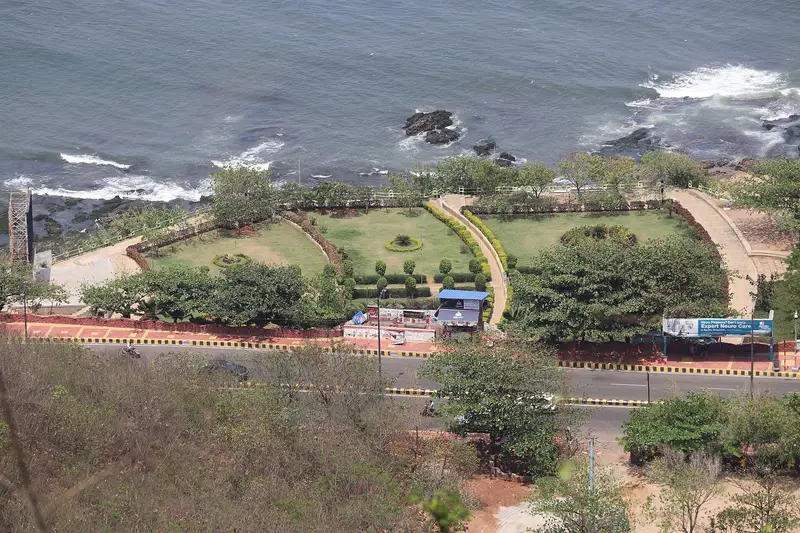
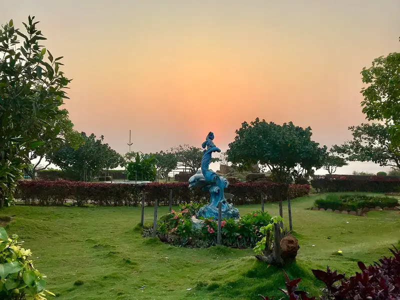

Day 2 · Stop 06 · Seaside garden
🕒 Day 2 · 12:15 – 1:20 PM may shift
Tenneti Park
Seaside gardens on Beach Road
Clifftop gardens above the sea, named after freedom fighter Tenneti Viswanadham.
- Gardens above the sea
- Named after Tenneti Viswanadham
- Sunrise and shipwreck views



About Tenneti Park
Tenneti Park (VUDA Tenneti Park) is a coastal park on Beach Road, just below Kailasagiri, laid out with lawns, gardens and walking paths right above the Bay of Bengal. It is named after Tenneti Viswanadham, a freedom fighter and social reformer.
It's one of the city's favourite spots for sunrise, picnics and photography, and it has appeared in many films. After Cyclone Hudhud damaged the park, GITAM University alumni funded its facelift.
In October 2020 the Bangladeshi cargo ship MV Maa ran aground on the beach below during a storm, and the stranded 80-metre ship became an attraction of its own.
What we'll see
- Sunrise over the sea from the garden walkways
- Sea-view lawns and sculptures
- The MV Maa ship on the beach below
- A calm picnic and photo stop
Photo gallery

.jpg){kind=link}
.jpg){kind=link}
_1.jpg){kind=link}
Crew plan · Day 2 · Stop 6 of 8
12:15 – 1:20 PM · Day 2 times may shift
A breezy stop right below Kailasagiri: garden walks, sea views and slow-motion reels.
Open in Google MapsTips
- Early morning gives the best light and the coolest air.
- It's right below Kailasagiri, so pair the two.
- Keep to the paths near the cliff edges.